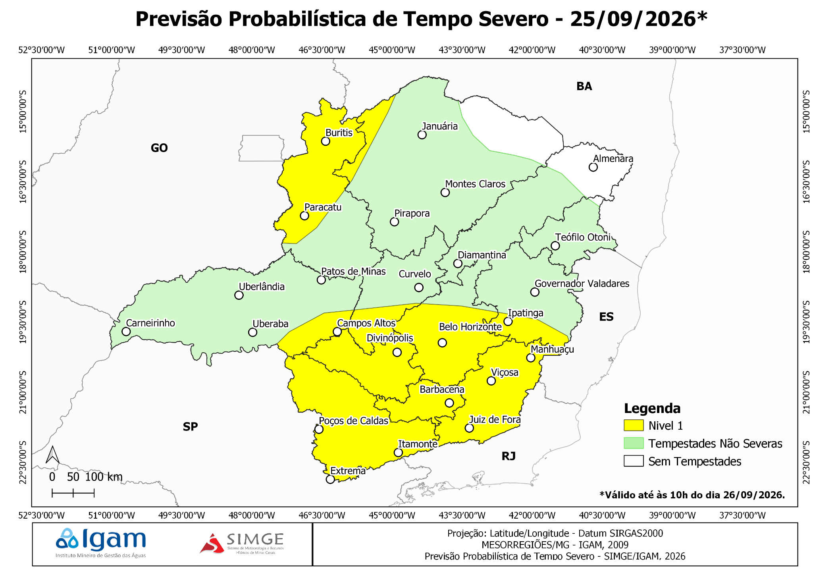

Tempestades não severas
— desenhe no mapa e dê duplo clique para concluir.
N ↑
Projeção: Latitude/Longitude - Datum SIRGAS2000
MESORREGIÕES/MG - IGAM, 2009
Previsão Probabilística de Tempo Severo - SIMGE/IGAM
Fechar
Mapa de referência enviado
